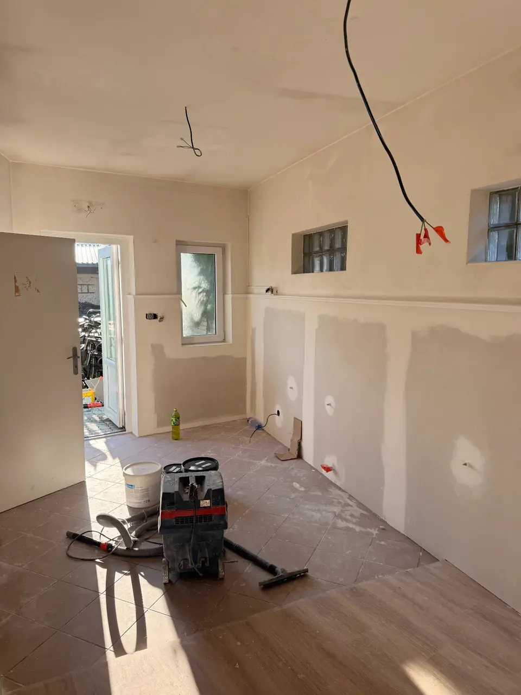
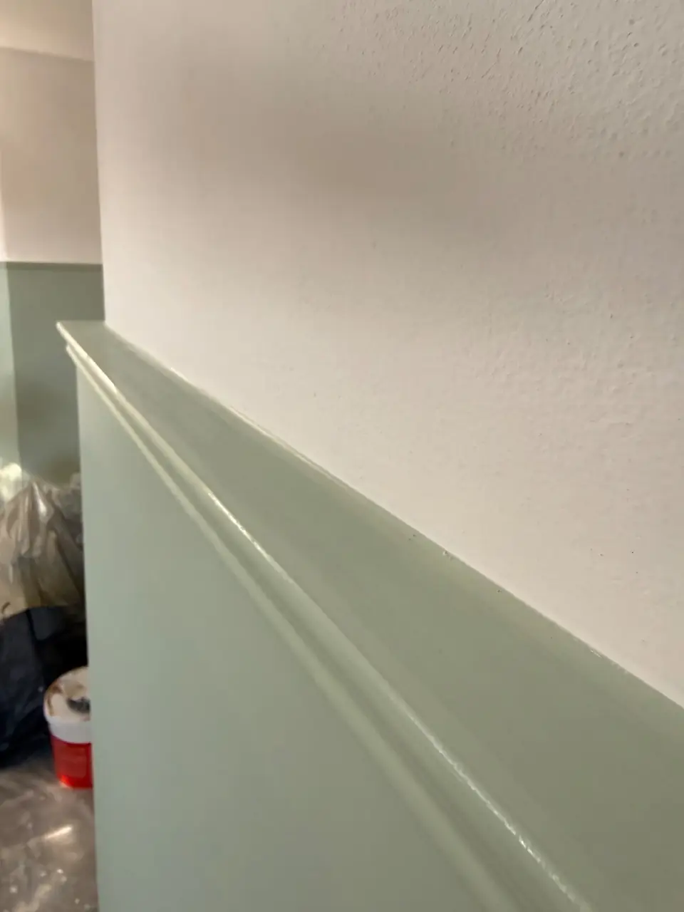
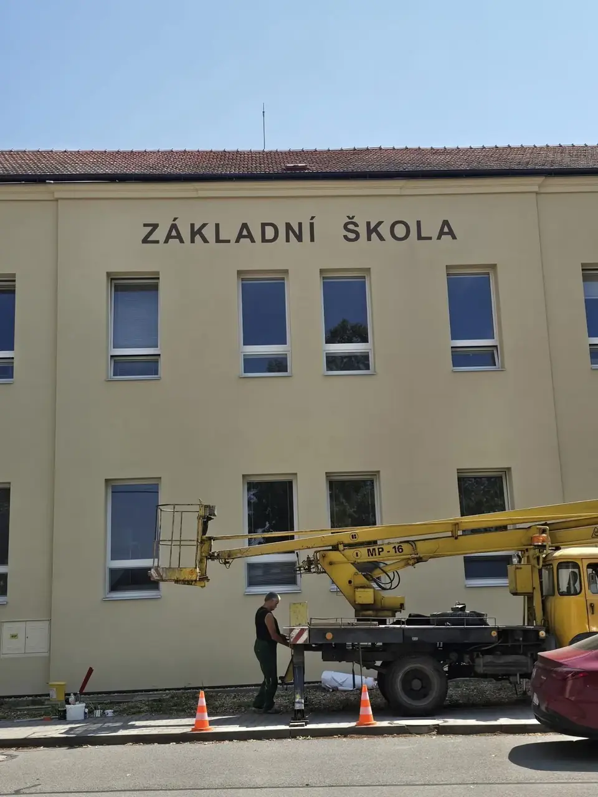
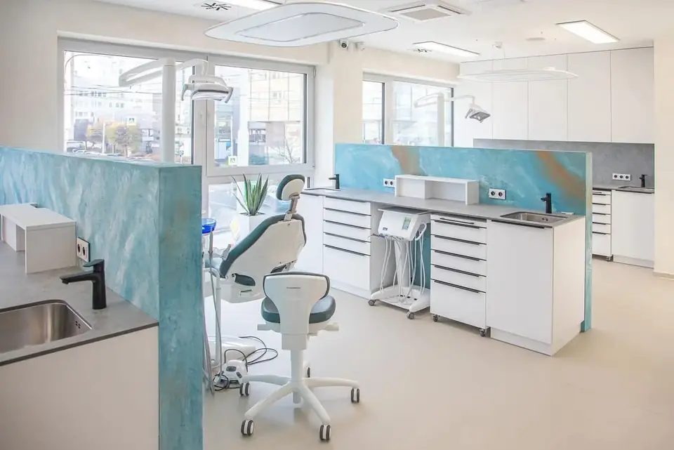
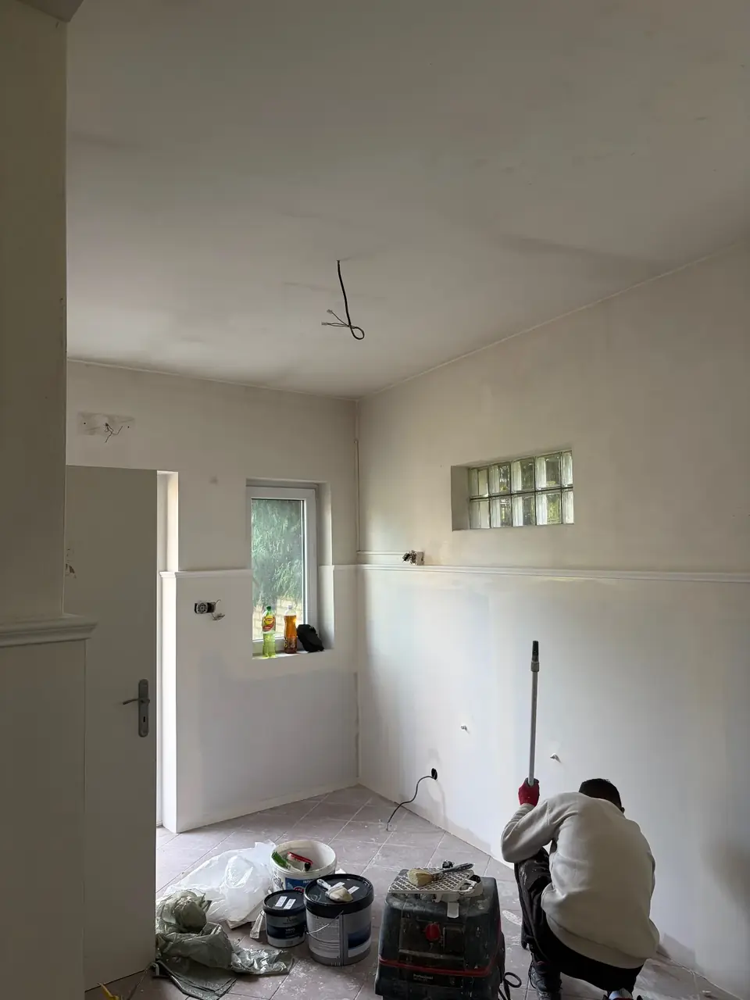
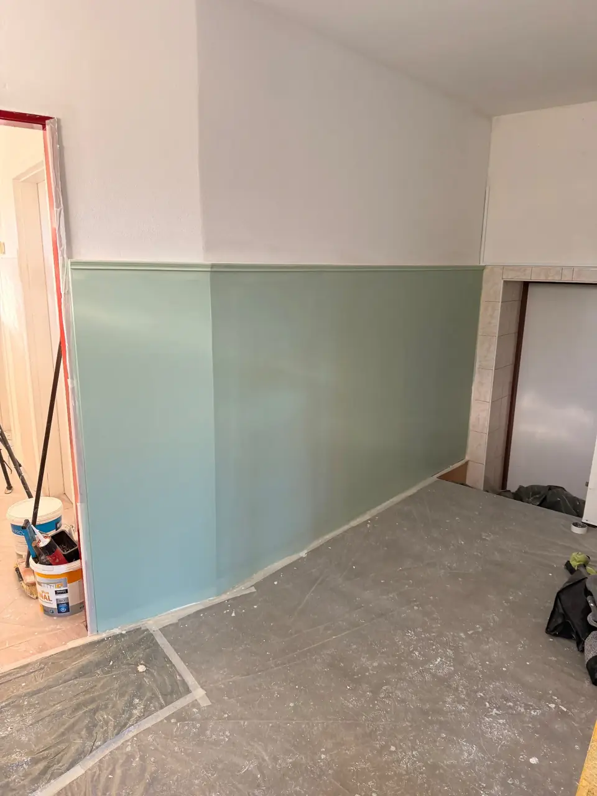

Dekorativní malování stěn Brno
Stěna, která má víc než jednu barvu. Dvoubarevné stěny s rovnou hranou, stěrky se zlatou a ručně malované nápisy. Poradíme, zakryjeme, po práci uklidíme.
- 5,0 z 29 recenzí na Googlu
- Ozveme se do 24 hodin
- Brno a okolí do 20 km

 PředPo
PředPo
Výmalba cukrárny · Střelice. Posuňte pásku a porovnejte stav před a po.
Dekorativní stěny z našich zakázek
Dvoubarevné malby, stěrky se zlatou i ručně malovaný nápis. Fotky jsou z naší galerie realizací.





Cukrárna ve Střelicích krok za krokem
Jedna zakázka: opravy stěn, zakrytí, rovná hrana mezi dvěma barvami a hotový provoz.
Opravíme stěny
Nerovnosti a opravy po instalacích připravíme před malováním.
před prací
Zakryjeme a malujeme
Podlahu zakryjeme, spodní část stěn natíráme odolnějším odstínem.
během práce
Rovná hrana
Přechod mezi dvěma barvami vedeme rovně po celé délce.
detailPředáme
Uklidíme, aby mohl provoz hned začít.
po práci
Co je v ceně
Cenu počítáme podle plochy a techniky. Zakrytí, příprava i úklid jsou v ceně, kterou vám předem potvrdíme.
- Návrh barev a rozvrženíProbereme odstíny, výšku přechodu a co se hodí k prostoru.
- Příprava a opravy stěnPraskliny a nerovnosti opravíme před malováním.
- Rovné hrany a detailyPřechody barev, rohy a napojení dotáhneme ručně.
- Zakrytí a úklidOkolí zakryjeme a po práci uklidíme.
- Malby obrazů a motivů[doplnit: malujete i obrazy, motivy nebo ilustrace na zeď? Pokud ne, napíšeme to sem rovnou]
- Stejní lidéKdo si s vámi práci domluví, ten ji i udělá.
Kolik stojí dekorativní malování
[doplnit: cena podle rozsahu, doplní majitel]
Pošlete fotku stěny a inspiraci a připravíme nezávaznou cenu. [doplnit: ceny s DPH, nebo bez?]
Chci nezávaznou cenu- Technikadvoubarevná malba, stěrka nebo nápis
- Plocha a detailymetry čtvereční, rohy, přechody
- Stav podkladuopravy před malováním
- Přístupinteriér, výška, provoz
Co píšou zákazníci
„S touto firmou máme jen ty nejlepší zkušenosti. Nejprve nám realizovali malby a dekorativní stěrky v práci a díky skvěle odvedené práci jsme je bez váhání oslovili i pro náš domov. Ve všech případech odvedli precizní práci, dodrželi domluvené termíny.“
★★★★★ Zákazník na Googlu, recenze na Googlu
Recenze přebíráme doslova, jen bez emoji. Všechny jsou na profilu firmy na Googlu.
Skvělá zkušenost s touto firmou při realizaci dekoračních stěrek. Borci odvedli perfektní a hlavně čistou práci. Se vším poradili a výsledek vypadá opravdu moc hezky. Oceňuji skvělou komunikaci a dodržení termínu. Určitě doporučuji.
S pány mám skvělou zkušenost. Krásně nám v rámci rekonstrukce vymalovali byt. V ložnici na naše přání udělali nádhernou malířskou stěrku. Všem doporučuji!
Chceme moc poděkovat za skvělou práci! Rychlost, výborná domluva a hlavně krásný výsledek! Určitě se na tuto firmu znovu obrátím :)
Výborná zkušenost a spolupráce. Kvalitně a precizně odvedená práce, včetně úklidu po malování prostor v OZP Brno.
Co si představit pod dekorativním malováním?
U nás hlavně dvoubarevné stěny s rovným přechodem, dekorativní stěrky (beton, štuk, zlaté efekty) a ručně malované nápisy a loga.
Malujete i obrazy nebo motivy na zeď?
[doplnit: ano / ne. Pokud ne, ušetří to telefonáty i peníze za reklamu.]
Kolik dekorativní malování stojí?
Záleží na technice, ploše, detailech a stavu podkladu. Pošlete fotku a inspiraci a připravíme nezávaznou cenu.
Uděláte i nápis nebo logo na stěnu?
Ano. Ruční nápisy a loga malujeme na fasády i v interiéru, obnovíme i stávající nápisy.
Malujete i provozovny?
Ano, například cukrárnu ve Střelicích. Termín přizpůsobíme provozu.
Pošlete fotku stěny a inspiraci
Nacenění je zdarma a nezávazné. Termín, který domluvíme, dodržíme.
+420 774 927 182- Střed
- Žabovřesky
- Královo Pole
- Líšeň
- Bystrc
- Bohunice
- Židenice
- Komín
- Starý Lískovec
- Modřice
- Šlapanice
- Kuřim
- Rosice
- Slavkov u Brna